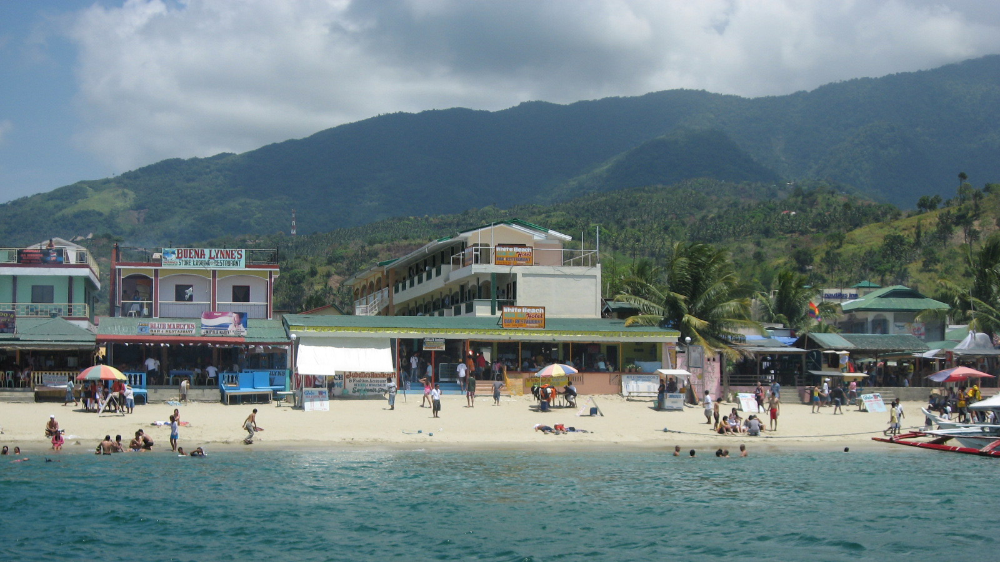

White Beach, Puerto Galera
Oriental Mindoro's most famous beach strip: fine white sand, calm swimming, beachfront resorts, and a long row of restaurants and bars that light up at sunset. Several resorts offer beachfront tent rentals alongside rooms, and public shore areas are used by groups for overnight beach camping with owner permission.
SwimmingSnorkelingSunsetBeach tents (resort-run)
Facilities: Cottages, restrooms, restaurants, dive shops, ATMs nearby, boat rental.
Estimated fees: Environmental user fee ₱50 (verified via port sources); resort tent rental from about ₱500 to ₱1,500 per night (estimated).
Getting there: Bus from Manila (Buendia or PITX, around ₱300) to Batangas Port, then fastcraft or RoRo ferry to Balatero or Muelle Pier, Puerto Galera (45 min to 1 hr 15 min). Tricycle to White Beach.
Book / Inquire